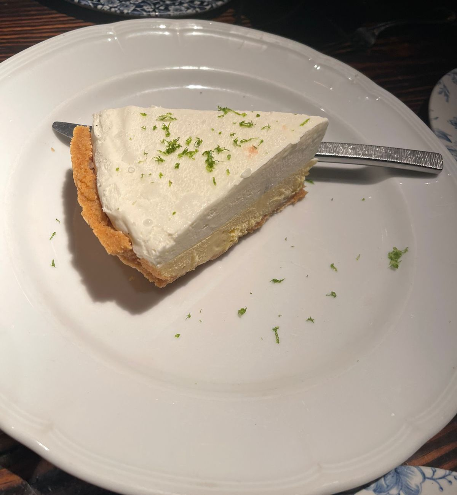
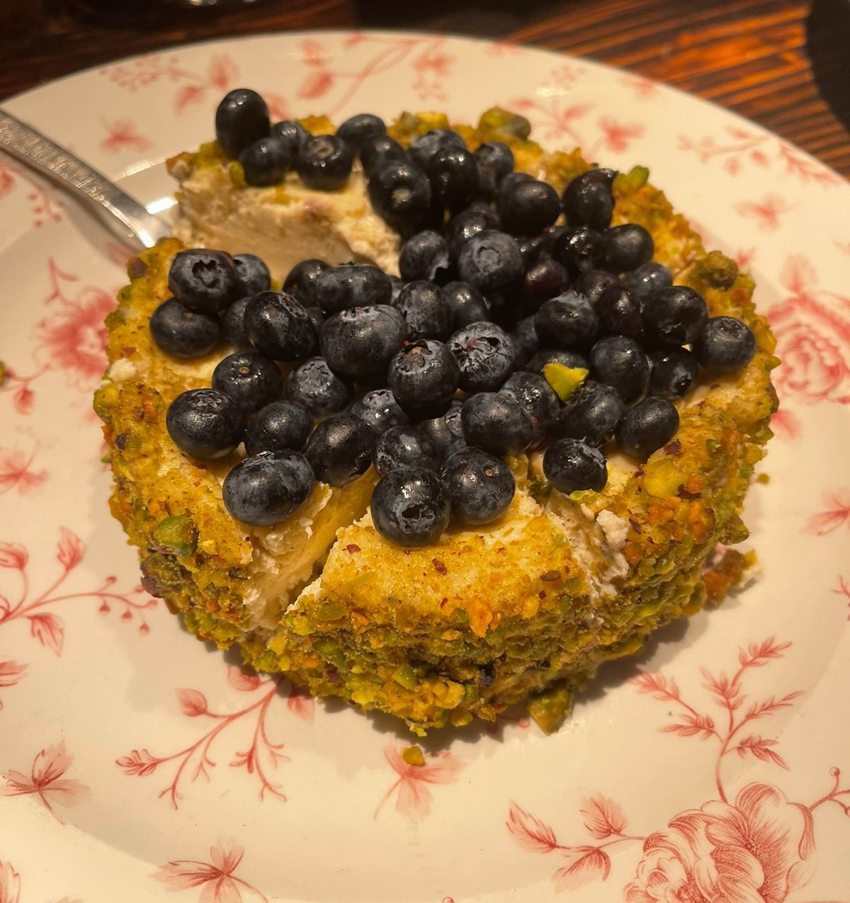

Gastronomia


Montreal es famosa por su comida, desde una escena culinaria que es infinitamente innovadora y tremendamente creativa hasta tradiciones culinarias locales probadas y verdaderas. Los elegantes bistros, los restaurantes informales y los restaurantes emergentes hacen que las experiencias gastronomicas de Montreal sean tan espectaculares como deliciosas. Pruebe la diversidad con clasicos probados y verdaderos o sacie sus antojos con nuevos giros culinarios.